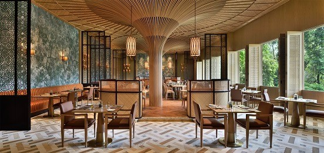

In our bid to deliver authentic, undiluted experiences, we’ve introduced a unique regional home style dining experience. Always prepared with a local touch, the home-style cooking ensures that you maintain good health throughout your stay. And at the same time it gives you the opportunity to dabble in the local delicacies.
Signature Restuarants

Machan
Welcome to the fabled Machan, the Capital’s original and much-loved dining destination with a culinary legacy that began in 1978

Wasabi By Morimoto
Enjoy classic Japanese dishes with innovative contemporary twists, made with ingredients specially flown in from Japan.